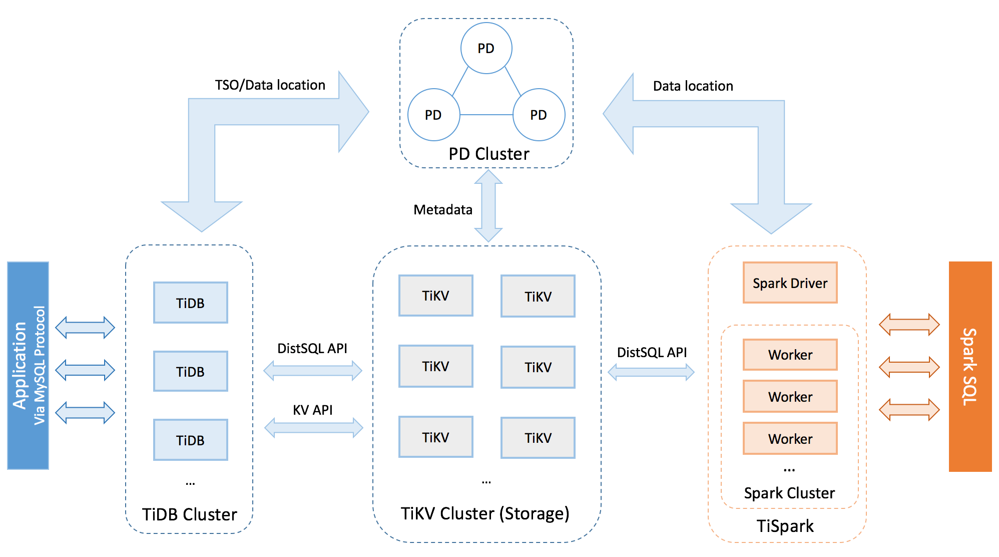
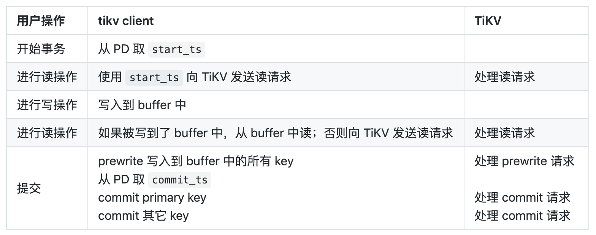
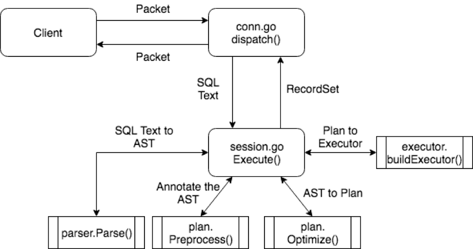
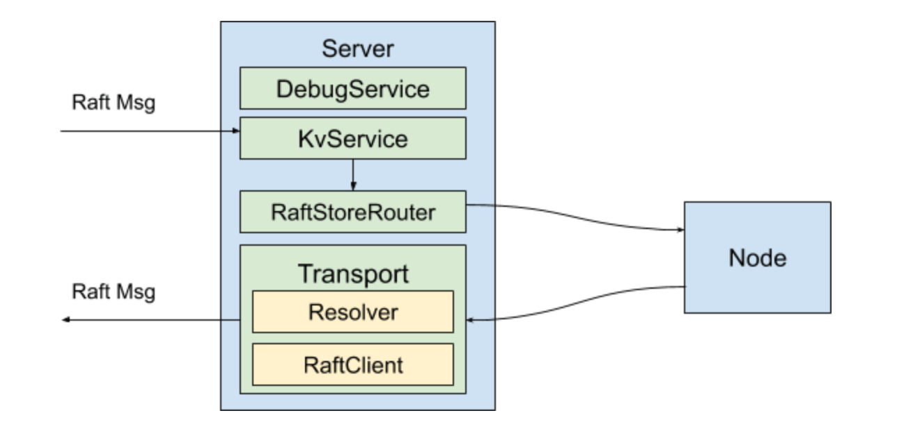
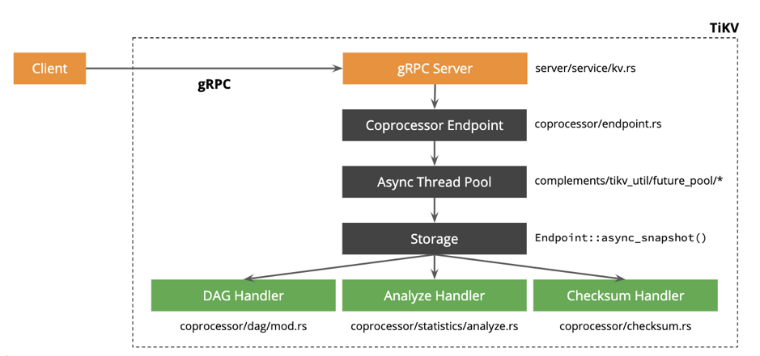
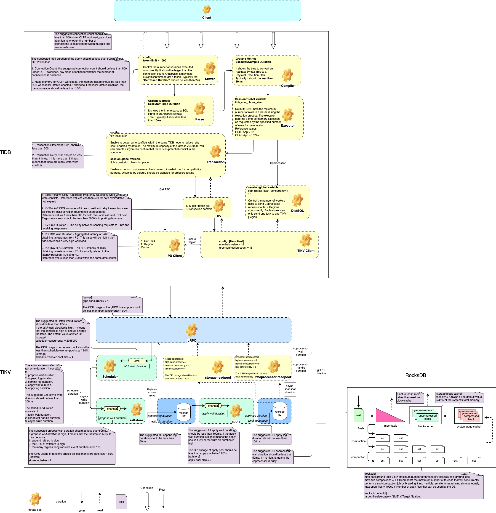

纸上谈兵 - TiDB 性能调优

Contents
0x00 缘 妙不可言
开局一张图，其他全靠编。本文内容中 performance map 基于 TiDB 2.1 & TiDB 3.0 构建；部分内容与新版本不适配，具体以官方解释为准（e.g: TiDB 4.0 Titan engine 读写与本文流程会有区别 ）
本页内容中 performance map 来自 PingCAP/TiDB-map 项目，最终所有权&解释权归 PingCAP 所有。
0x01 开局
首先了解下 TiDB 整体的架构
- TiDB（产品）三大金刚组件：PD、TiDB、TiKV
- TiDB-server 负责 session 链接管理、SQL 解析 & 执行、使用 SQL 语言读写 TiKV 中的 KV 数据
- PD 负责 region 调度 & region 信息统计、TiKV 状态管理、TSO 分发（类似 SCN / GTID 的东东）
- TiKV 负责存储数据以及部分下推 SQL 的计算（数据格式为 Key-value）
- 三副本强一致概念实现 raft-rs
合体后的姿势是这样的（暂时忽略掉 tispark，本文不涉及这部分）：

TXN
如果链接到 TiDB，执行一条 insert 语句差不多是这么一个流程（图片中好像少了一部分，让我们继续往后看）
该图来自于 分布式事物

SQL
而事物在 TiDB 经历了什么呢？
该图来自于 TiDB SQL 的一生

从图片中可以看到 TiDB 通过 conn.go 建立 session 链接，随后接收 SQL text 内容交由 session.go 来处理。
session.go 收到 SQL text 后将数据发送给 parser 验证 SQL text 格式、内容是否有效；验证成功后发送给 plan 两兄弟（plan.preprocess & plan optimize），兄弟两个一个是用来思考怎么帮助用户规划路径，另一个兄弟是思考如何才能最快的去执行任务拿到数据。
兄弟两个合拍之后出了报告发送给 executor.build 大佬，大佬专业押镖数十年，由该大佬去 TiKV 存储层获取目标数据。
辣么 parser 是怎么检测 sql text 的呢？ executor 是怎么拿到数据的？plan 两兄弟又出的什么主意呢（基于规则的优化& 基于代价的优化）？
《走进科学》专业人士与你慢慢细谈
TiKV server
TiDB 接收到了 SQL ，怎么送到的 TiKV 、TiKV 又是怎么回复的？或许这是未来 TiDB 十万个为什么 必备题吧
这里没找到图，暂时也没作图，先挖个坑吧，或者看文章也是可以的，比如 TiKV client in TiDB 上 & TiKV client in TiDB 下
- 本部分信息挖坑
- grpc 线程池
- raftstore
- apply sync
- mvcc
改图来自于 TiKV-server

TiKV coprocessor
改图来自于 TiKV coprocess 概览
storage readpool 与 coprocessor 负责处理不同场景的 读，负责读的还有另一兄弟 kv_get

TiKV schedule
此处暂无内容
0x02 awsl
看完上面内容迷路了么？如果迷路了这里有份 鸟瞰图 可以拿去看看
齿轮部分是可以用与调优的地方，需要区分读写两个流程哟（读写各有不同的调优参数）
rocksDB 内的参数谨慎调试、调了需要一定时间才有反应（非即时反馈）
{kind=link}
- 参数调证
- TiDB 调整 tidb.toml& TiDB session variable，如果想了解 session variable 的调整，还需要先阅读这篇文档 Chunk 和执行框架简介
- TiKV 调整 tikv.toml
- Grpc 线程池 介绍
- 可能还需要 PD 配合，比如 PD-ctl，而不是 pd.toml 文件
- 是不是懵逼，即时知道了调那些参数，也不知道该调多少数值？因为少了一部分知识体系：《监控-资源使用》

0x03 坑
本文坑有些多，先记录下能想到的坑 #顺着网线过来打我也没用
- coprocessor & schedule 描述
- 各组件 client
- 性能监控
- tikv server